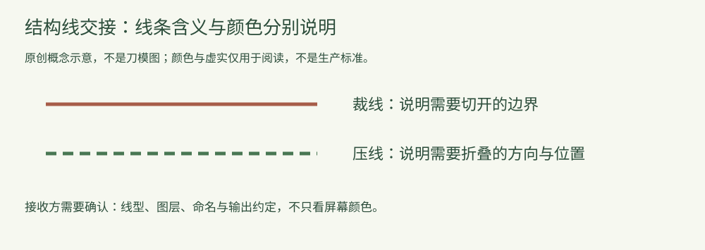

知识文章
结构文件图解：裁线与压线，为什么不能只用颜色沟通？
2026-10-15 · 印个泡泡
区分线条用途、显示样式与实际输出约定，避免仅凭截图判断。
两条线看起来颜色不同，不代表接收方已经知道它们怎样加工。结构文件交接时，要把线条的用途、线型及输出约定说清楚，而不只发一张彩色截图。

原创概念图，不是刀模图；颜色、虚实和长度仅帮助阅读，不是通用生产规则。
用途与显示样式是两回事
裁线用来说明切开边界，压线涉及折叠位置。Esko的ArtiosCAD文档把Cut、Crease等列为线型，并说明线型类别与属性及输出处理有关。这提醒我们：线条信息不只是它在屏幕上显示成什么颜色。
接收方需要哪一套约定？
确认结构文件中各类线的含义、图层或命名方式，以及需要怎样保留或映射到输出文件。具体软件、设备与生产流程可能采用不同约定，不能把某个示例中的颜色当成所有印厂的识别规则。
三个交接问题
- 哪些线用于裁切、压线或其他加工，各自怎样标识？
- 导出或转换后，必要的信息是否保留，是否出现重复或遗漏？
- 接收方能否按当前文件确认结构，而不是只能看到效果截图？
保留可编辑原稿和已确认的结构版本。不要把展示用图片重新描线后就直接当成生产文件，也不根据示意图自行设置加工参数。
来源：Esko ArtiosCAD 22.11文档：Line types，版本22.11；访问2026-10-15。本文为交接概念，不提供软件操作脚本。
为你的产品，找到适合的包装。
选包装，获取报价 →